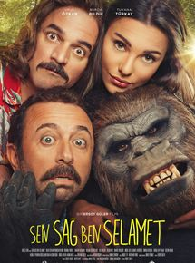
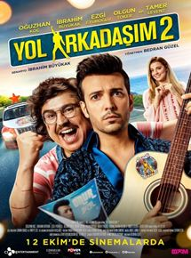

Vizyon tarihi: 19 Nisan 2019 (1s 24dk)
Yönetmen: Mustafa H. Öztürk
Oyuncular: Linda Cardellini, Roman Christou, Jaynee-Lynne Kinchen
Tür: Komedi
Ülke: Türkiye
Özet ve Detaylar
Çocuk filmi
Kuklalı Köşk: Hırsız Var, zengin olma hayali kuran bir grup hırsızın, canlı kuklaları çalmaları sonucu başlarına
gelen maceraları konu ediyor. Büyük bir köşkte yaşayan Müşfik Amca’nın bir akşam arkadaşlarının davetine
katılması, beklenmedik olayların gelişmesine neden olur. Müşfik’in evine girmeyi planlayan Behçet ve Riko
adındaki hırsızlar, onun evden ayrılmasıyla birlikte planlarını uygulamaya koyulur. Hırsızlar evde kimsenin
olmadığını düşünmektedir ancak bilmedikleri çok önemli bir şey vardır. Müşfik, evden giderken köşkü kuklalara
emanet etmiştir. Eve hırsızların girdiğini gören kuklalar, evi hırsızlara karşı savunmaya başlar. Karşılarında
birden canlı kuklaları görünce ne yapacaklarını şaşıran Behçet ve Riko, kuklaların daha çok para edeceğini
düşünüp, onları kaçırmaya karar verir. Ancak bunu yapmak, sandıkları kadar kolay olmayacaktır.
Hababam Sınıfı Yeniden
Vizyon tarihi: 5 Nisan 2019 (1s 51dk)
Yönetmen: Doğa Can Anafarta
Oyuncular: Altan Erkekli, Toygan Avanoğlu, Hande Katipoğlu
Tür: Komedi
Ülke: Türkiye
Özet ve Detaylar
Rıfat Ilgaz’ın unutmaz eseri Hababam Sınıfı yeniden beyaz perdeye uyarlanıyor. İnek Şaban, Güdük Necmi, Damat
Ferit, Hafize Ana, Mahmut Hoca gibi sevdiğimiz karakterlerle gönüllere taht kuran klasikleşmiş filmin
uyarlamasında yeni karakterler, yeni bir jenerasyon, yeni bir dil hakim. Özel Çamlıca Lisesi, yeniden karma
eğitime geçince, kızlar ve erkekler arasından tatlı bir rekabet başlar. Okula yatılı gelen kız öğrenciler ile
okulun gediklileri başlarda birbirlerine meydan okurken, bir süre sonra müttefik olarak birlikte birçok maceraya
atılır.1975 yılında Ertem Eğilmez’in yönetmen koltuğunda oturduğu filmin yönetmenliğini bu sefer Doğa Can
Anafarta üstleniyor. Yapımcılığını Hann Media’nın üstlendiği filmin senaryosunu ise Evren Erdoğan ve Ayşe
Balıbey birlikte kaleme alıyor.
Sen Sağ Ben Selamet

Vizyon tarihi: 15 Aralık 2016
Yönetmen: Ersoy Güler
Oyuncular: Burçin Bildik, Ufuk Özkan, Tuvana Türkay
Tür: Komedi
Ülke:Türkiye
Özet ve Detaylar
Üç kaçağın yolu sık sık kesişmektedir. Cezaevinden tahliyesine iki gün kalan Selamet ile müebbet cezası olan
koğuş arkadaşı Sansar, aynı yolun yolcularıdır. Sansar’ı, Sivas Kapalı Cezaevi’ne götürecek nakil aracı,
Selamet’i de memleketine bırakacaktır. Bu yolun karşı yönden gelen bir başka yolcusu daha vardır; Goril Behlül.
Araçlarının çarpışmasından sonra başlarından macera dolu komik olaylar geçecektir. Bu üç kaçağın sürükleyici
aksiyon, komedi ve maceralarına konu edinen filmin oyuncu kadrosunda ise Ufuk Özkan, Burçin Bildik, Tuvana
Türkay, Lale Başar,Ayçin İnci, Hakan Karahan, Hasan Küçükçetin, Murat Kocacık, Müge Uzel, Gamze Aydoğdu, Emrah
Özdilek ve Savaş Alp Başar yer alıyor.Yapımcılığını Süreç Film, İnci Gündoğdu Ve İsmail Gündoğdu’nun yaptığı
“Sen Sağ Ben Selamet” filminin yazarlığını ve yönetmenliğini Ersoy Güler üstleniyor.
Yol Arkadaşım 2

Vizyon tarihi: 12 Ekim 2018 (1s 56dk)
Yönetmen: Bedran Güzel
Oyuncular: İbrahim Büyükak, Oğuzhan Koç, Ezgi Eyüboğlu
Tür: Komedi
Ülke: Türkiye
Özet ve Detaylar
Yol Arkadaşım 2, başrollerini Oğuzhan Koç ve İbrahim Büyükak'ın üstlendiği komedi türündeki Yol Arkadaşım'ın
devam halkasıdır. Ayvalık'a yaptıkları yolculukta dost olan ve binbir badirenin ardından "yol arkadaşlığı"
kavramının hakkını veren Şeref ve Onur ikilisi, son 1 yılda daha da kenetlenmiştir. İkili son 1 yıl içinde iş
arkadaşı olmanın yanı sıra ev arkadaşlığı da yapmaya başlamıştır. Karakterleri birbirine tamamen zıt olan bu iki
adamın paylaştığı iki alanda da dertler ve aksilikler bitmez. Şeref'in işi, müzik kariyerine atılmaya çalışan
Onur'un menajerliğini yapmaktır. Ancak bu konuda oldukça yeteneksizdir. Sıkıntılara dayanamayan Onur, sevmediği
eski işi ilaç laç mümessilliğine geri dönmeye karar verince, Şeref alelacele ona bol sürprizli bir turne
ayarlar. İkilinin bu turne yolculuğu da aşk, macera ve aksiliklerle dolu geçecektir... İlk filmin senaryosunu
üstlenen İbrahim Büyükak bir kez daha senarist koltuğuna oturuyor. Onur ve Şeref'in yaşadığı maceralara tanık
olacağımız filmin başrollerini ilk filmde olduğu gibi Oğuzhan Koç ve İbrahim Büyükak üstleniyor. Yönetmen
koltuğunda Bedran Güzel’in oturduğu komedi türündeki filmin kadrosunda sevilen ikiliye Ezgi Eyüboğlu ve Olgun
Toker eşlik ediyor.